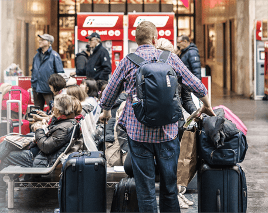
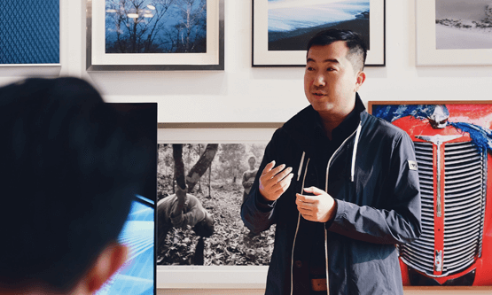
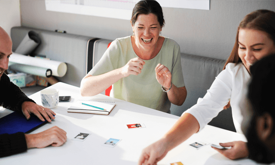

Ускоренный 2-месячный курс английского языка
Освойте английский для путешествий и наутесь объяснять в любой ситуации
Бывали ли вы в подобных ситуациях
Вы думали, что знаете
английский, но в гостинице
с трудом выговариваете,
какой номер вам нужен.01 Вы смогли спросить,
до какой станции метро нужно дойти,
но не поняли, куда вас отправили02
В аэропорту при любом подозрении
на задержку, вы ищите представителя,
хоть как-то говорящего по-русски03Все это портит впечатление
от отдыха и отбивание желание
посещать новые страныв итоге
Мы предусмотрели эти ситуации
- Значение
Разбираем те ситуации, с которыми сталкивается путешественник.
- Понимание
Учим объясняться сами и понимат, что говорят другие
- Практика
Проводим диалоги с преподавателями и носителями языка
Что входит в стоимость
21 000 рублейВы пройдете 2-месячную программу по 2 занятия в неделю, в конце каждой из которых сможете самостоятельно построить диалог
- 1 неделя-аэропорт
Вылет-прилет, регистрация, специальный и пограничный, потеря багажа, задержка рейса.
- 2 неделя - дорога, трансфер
Поиск транспорта, пункты назначения, общение с водителем (уточнения, просьбы, остановки)
- 3 неделя - гостнициа, ночлег
Поиск ночлега, бронирование, уточнение условий проживания, решение проблем с персоналом
- 4 неделя - культурный отдых
Покупка билетов, туров. уточнение, обстоятельств, потеря напарника, сопровождающег.
- 5 неделя - местность, поиск
Выяснение дороги, направления, местонахождения(собственного и нобходимых мест)
- 6 неделя - магазины
Выбор, общение с продавцами, выясненице цены, торг, покупка, возврат, случаи мошеничества
- 7 неделя - общение с местными
Непринужденные беседы, вопросы, просьбы о помощи, совместный обед, время препровождения
- 8 неделя - неождианные ситуации
Разбор непредвиденных случаев(потеря документов, обращение в полицию, скорую)
Как все будет проходить
- Простое запоминание
Слова запоминаются в результате упрощенных
техник и применения в спонтанных ситуациях,
а не посредством зубрежки - Импровизация и диалоги
Форма импровизации позволяет подготовиться
к ситуации, когда шаблонные ответы
буду неприменимы - Говорим и слуаем
Прослушивание себя и профессоналов позволит
научиться воспринимать чужую речь на слух - Повторение
Каждое следующее занятие включает в себя
закрепление предыдущих тем и создает базу
для прохождения следующих
Бесплатное пробное занятие
Приходите на бесплатное превое занятие по теме "аэропорт" и ощущите пользу сразу!